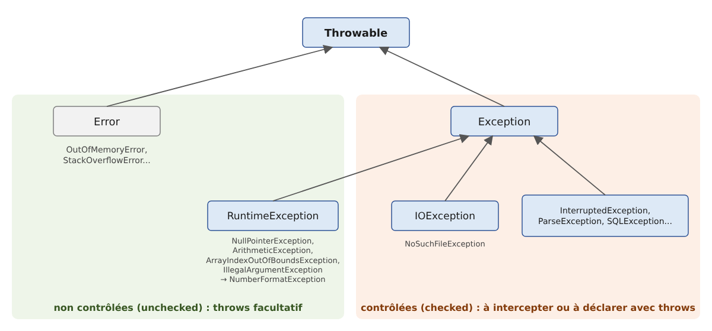

3. The Basics of the Java Language
3.1. Introduction
We’ll start by treating Java as a traditional programming language. We’ll cover classes in the next chapter. A program consists of two things:
- data;
- the instructions that manipulate them.
We generally strive to separate data from instructions:

All the examples in this chapter are compact source files: a single file named [.java], without a Maven project, which is run using the command [java Bases01.java]. The [java] launcher then compiles the file in memory and executes it, without producing a [.class] file. This capability was introduced in Chapter 2, “Setting Up the Development Environment.” The examples are located in the [03-bases] folder of the course code. They run using the French language and conventions (the “locale” fr-FR), just as they would on a French Windows machine. We will see that this only affects numbers and dates formatted with a specific format: the simple conversion of a floating-point number to a string always uses the decimal point.
3.2. The Minimal Program
3.2.1. The compact source file
The program [Bases01.java] is as follows:
Results:
Comments:
- The file contains no class declarations—only a method named [main]. This is a compact source file (Java 25). The compiler itself wraps the file’s contents in an implicitly declared class that bears the file’s name: [Bases01]. This feature was introduced as a preview in Java 21 through Java 24 before becoming final in Java 25;
- Line 3: The method [main] is the program's entry point: it is this method that the launcher [java] executes. Starting with Java 25, it can be written simply as [void main()], without the keywords [public] and [static] and without any parameters. The body of the method is enclosed in curly braces;
- line 4: the method [println] of the class [IO] (Java 25) writes a line to the screen;
- Line 6: The legacy form of the same operation. [System] is a class, [out] is one of its fields, which represents standard output (the screen), and [println] is a method of this object. [IO.println(x)] is simply a shortcut for [System.out.println(x)]. We will use [IO.println] in compact files and [System.out.println] in regular classes, where it appears throughout the existing Java code;
- line 8: [List] is a list of character strings; Lists will be covered in Chapter 5. [List] belongs to the [java.util] package: a package groups related classes, just as a folder groups files. The full name of the class is [java.util.List]. It can be used without an import statement because the file is a compact file (see below);
- line 9: a list is displayed with its elements enclosed in square brackets;
- each statement ends with a semicolon; lines beginning with // are comments, which are ignored by the compiler.
With two command-line arguments (placed after the file name):
The arguments are ignored because the method [void main()] has no parameters to receive them. To use them, declare it as [void main(String[] args)]: the string array [args] then contains the command-line arguments. We’ll come back to this in the “Main Program Arguments” section.
3.2.2. The classic form with a class and a main method
Up to Java 24, the same program had to be written as follows: [Bases02.java]:
Results:
Comments:
- Line 2: The directive [import] imports the class [Arrays] from the package [java.util]. You can then write [Arrays] instead of [java.util.Arrays]. In a regular class, only the classes from the [java.lang] package ([System], [String], [Math], [Integer], [IO]...) can be used without importing;
- line 4: In Java, all code belongs to a class. The class here is named [Bases02]. A class declared as [public] must be located in a file bearing that name: [Bases02.java];
- line 6: the method [main] is the program’s entry point. It is [public] (accessible from outside the class, in particular via the launcher [java]), [static] (it executes without requiring the creation of an object of the class), returns no result ([void]), and receives command-line arguments in the array [args];
- line 8: the number of elements in the array [args] is [args.length]. The + operator concatenates a string and a number here: the number is first converted to a string;
- Line 10: The [Arrays.toString] method constructs a string from the elements of an array.
A file containing a regular class can also be executed directly by the launcher ([java Bases02.java]). You can also compile it first using the [javac] compiler, which produces a [Bases02.class] file containing the class’s intermediate code (“bytecode”), and then execute that class using the command [java] followed by the class name (without the extension). This is what Maven and development environments do behind the scenes:
The two programs [Bases01.java] and [Bases02.java] are similar in nature. When it encounters a compact file, the compiler itself generates a [final] class bearing the file’s name, whose methods and fields are those written in the file. The compact file is therefore simply a shorthand version of the standard form. It is well-suited for the small programs in this chapter; the standard form becomes necessary as soon as a program contains multiple classes, which will be the case starting in Chapter 4.
Since Java 25, the [main] method can take four forms: [static void main(String[] args)], [static void main()], [void main(String[] args)], and [void main()]; if a class contains several of them, the launcher prefers the one with the parameter [String[]]. The last two forms are instance methods: the launcher first creates an object of the class, then calls its [main] method. The keyword [public] is no longer required.
3.2.3. Automatic import of the java.base module
The program [Bases01.java] uses the class [List] without the [import java.util.List;] directive. This is possible because the compiler automatically adds the following directive to every compact file (Java 25):
The classes in the Java standard library are organized into packages, which are in turn grouped into modules. The [java.base] module is the core module: it contains the most commonly used packages. The directive [import module java.base;] imports all public classes from all packages exported by this module at once, which is equivalent, among other things, to the following directives:
In a compact file, you therefore have access—without having to write a single line of code—to lists and dictionaries ([java.util]), files ([java.io], [java.nio.file]), large numbers ([java.math]), dates ([java.time]), etc. A class from another module—such as the JDBC classes from the [java.sql] module—must always be explicitly imported. In a regular class, nothing is automatically imported from outside the [java.lang] package: you write one directive per class ([import java.util.Arrays;]), one directive per package ([import java.util.*;]), or, since Java 25, one directive per module ([import module java.base;]). The class [IO] is part of the package [java.lang]: it can be used anywhere.
3.3. Java Data
Java uses the following data types:
- integers;
- real numbers;
- decimal numbers;
- characters and character strings;
- Booleans;
- objects.
3.3.1. Predefined data types
Java Type | Wrapper class | Data represented | Literal suffix | Encoding | Value range |
[char] | [Character] | character | 2 bytes | Unicode character (UTF-16), from '\u0000' to '\uffff' | |
[byte] | [Byte] | integer | 1 byte | [-2⁷, 2⁷-1], or [-128, 127] | |
[short] | [Short] | integer | 2 bytes | [-2¹⁵, 2¹⁵-1] or [-32768, 32767] | |
[int] | [Integer] | integer | 4 bytes | [-2³¹, 2³¹-1] or [-2147483648, 2147483647] | |
[long] | [Long] | integer | L | 8 bytes | [-2⁶³, 2⁶³-1] or [-9223372036854775808, 9223372036854775807] |
[float] | [Float] | real number | F | 4 bytes | [1,4 10⁻⁴⁵, 3,4 10³⁸] in absolute value, 7 significant digits |
[double] | [Double] | real number | D (optional) | 8 bytes | [4,9 10⁻³²⁴, 1,8 10³⁰⁸] in absolute value, 15 to 16 significant digits |
[boolean] | [Boolean] | Boolean | Undefined | [true], [false] | |
[String] (class) | string | reference to a sequence of Unicode characters | |||
[BigDecimal] (class) | decimal number | variable | exact decimal number, of any precision | ||
[Object] (class) | object reference | reference to an object of any type |
The first eight types in the table, whose names are written in lowercase, are Java’s primitive types. All other types are reference types: classes ([String], [BigDecimal], [Object]...), as well as arrays, enumerations, interfaces, and records, which we’ll cover later. The difference is fundamental:
- a variable of a primitive type directly contains its value;
- a variable of a reference type contains the object’s address (its reference), with the object itself stored elsewhere in memory.
A value of a primitive type is not an object: it has neither fields nor methods. However, each primitive type corresponds to a “wrapper class” in the [java.lang] package: [Integer] for [int], [Double] for [double], [Character] for [char], and so on. An object [Integer] wraps a value [int]. These classes also provide useful constants and methods: [Integer.MAX_VALUE], [Integer.BYTES], [Integer.parseInt]... Since Java 5, the compiler automatically converts a primitive type to its wrapper class (boxing) and vice versa (unboxing). Thus, we can write:
Literal 3 is of type [int]. Since it has no methods, we cannot write [3.getClass()]: we must first wrap it in a [Integer] object using [Integer.valueOf(3)]. Every object has a method [getClass()] that returns an object describing its class; the method [getName()] of that object returns the full name of the class, in this case [java.lang.Integer].
Java does not have unsigned integers, apart from the type [char] (16 bits). Wrapper classes, on the other hand, provide methods that interpret the bits of an integer as those of an unsigned number: [Integer.toUnsignedString], [Integer.parseUnsignedInt], [Integer.compareUnsigned], [Byte.toUnsignedInt]... It also lacks a primitive decimal type: amounts are calculated using the [BigDecimal] class from the [java.math] package, which we’ll discuss a little later.
The program [Bases03.java] illustrates these various points:
Results:
Comments:
- line 3: declaration of an integer [ent] initialized to 2;
- line 4: the suffix F is required: the literal 10.5 is of type [double], and the compiler rejects [float fl = 10.5;], which would result in a loss of precision;
- line 7: the literal 1000 is of type [int]; it is automatically converted to [long];
- line 12: a [BigDecimal] number is an object; it is created here from a string, which guarantees an exact value;
- line 14: The [formatted] method (Java 15) is applied to a formatted string: each %s placeholder is replaced by the value of the following parameter converted to a string, and each %d by the value of an integer. The parameters are taken in order. We’ll discuss formats in the next section;
- line 14: the [nomType] method (lines 36–38) expects a parameter of type [Object]. The variable [ent], of type [int], is automatically wrapped in a [Integer] object, whose class is [java.lang.Integer]: this is why the output shows the wrapper classes rather than the names of the primitive types. [Integer.BYTES] (Java 8) is the size in bytes of a [int];
- line 17: [String] is a class, not a primitive type: the memory size of an object is not accessible in Java;
- line 22: The size of a [boolean] is not defined by the Java specification: the [Boolean] class does not have a [BYTES] constant;
- line 25: the literal 3 is explicitly wrapped in a [Integer];
- lines 27–29: the constants [MIN_VALUE] and [MAX_VALUE] of the wrapper classes define the bounds of the value range. Note: For real numbers, [Double.MIN_VALUE] is the smallest strictly positive value (4.9 × 10⁻³²⁴) and not the largest negative number, which is [-Double.MAX_VALUE];
- lines 31–32: -1 is encoded as 32 bits set to 1; interpreted as an unsigned integer, these 32 bits equal 2³²–1;
- lines 36–38: a method from the compact file. It returns ([return]) as a character string ([String]). The methods are described in the section “Passing Parameters to a Function.”
Note that real numbers are displayed with a decimal point (10.5, -4.6), even though the program runs in French. Converting a number to a string via concatenation—using [String.valueOf], [toString], or the %s specifier—does not depend on the user’s language: it always produces a decimal point. Only numeric formats such as %f, which we will discuss, follow the conventions of the language.
3.3.2. Notation for Literal Data
Data | Examples of literals |
integer [int] (32 bits) | 145, -7, 0xFF (hexadecimal), 0b1010_1010 (binary) |
Integer [long] (64 bits), suffix L | 100000L, 1_000_000_000_000L |
floating-point [double], optional suffix D | 134.789, -45E-18 (-45 × 10⁻¹⁸), 10D |
real [float], suffix F | 134.789F, -45E-18F |
decimal number [BigDecimal] | no literal: [new BigDecimal("100000.50")] |
character [char] | 'A', 'b', '\n', '\u00e9' |
string [String] | "today", "c:\\chap1", text block """...""" |
Boolean [boolean] | [true], [false] |
date | [LocalDate.of(1954, 10, 13)] (year, month, day) for 10/13/1954 |
In the source code, floating-point numbers are always written with a decimal point. Since Java 7, integers can be written in binary (prefixed with [0b]) and groups of digits can be separated by the _ character to improve readability: [1_000_000] is the integer one million. The suffix L can be written in lowercase, but l looks too much like the digit 1. Finally, beware of a pitfall inherited from the C language: an integer written with a leading 0 is interpreted as octal (base 8): 017 is equal to 15.
A string literal can contain escape sequences introduced by the \ character: "\n" represents the end-of-line character and not the sequence of the two characters \ and n, "\t" represents a tab, "\"" represents a double quote, and "\\" represents the \ character itself. To write the Windows path c:\chap1\paragraph3, you must therefore write "c:\\chap1\\paragraph3". Java does not have a “raw” string in which the \ character is interpreted as-is; however, Java’s file classes also accept the / separator on Windows: "c:/chap1/paragraph3" refers to the same file.
To construct a string from multiple values, Java offers two methods:
- concatenation using the + operator: as soon as one of the two operands is a string, the other is converted to a string;
- formats: [String.format(format, valeur1, valeur2, ...)], or equivalently [format.formatted(valeur1, valeur2, ...)] (Java 15), and for direct display, [System.out.printf(format, valeur1, ...)]. The format string contains placeholders that are replaced in order by the following values: %s (any value converted to a string), %d (an integer), %f (a floating-point number), %.2f (a floating-point number with two decimal places), %x or %X (an integer in hexadecimal), %,d (an integer with a thousands separator), %e (scientific notation), %n (a line break), %10s (a string right-justified to 10 characters), %-10s (left-justified)... Numeric formats follow the conventions of the user’s language.
Java does not support “interpolated” strings containing expressions within curly braces: such a feature (known as “string templates”) was proposed as a preview in Java 21 and 22, but was later removed. Concatenation and formatting remain the only options.
Since Java 15, you can write a string across multiple lines using a “text block”: it begins with three quotation marks followed by a line break and ends with three quotation marks. It can contain unescaped quotation marks. Leading whitespace at the beginning of all lines (including the line containing the closing quotation marks) is removed, allowing the text to be indented with the code. However, escape sequences are interpreted the same way as in a regular string: you must always write \\ to get \. Text blocks are very useful for writing JSON, SQL, or HTML.
The program [Bases04.java] demonstrates these different notations:
Results:
Comments:
- line 4: [0xFF] is 255 and [0b1010_1010] is 170;
- line 5: the suffix L is required for a literal that exceeds the range of [int]. Without it, the compiler rejects the line with the message [error: integer number too large];
- line 8: -45E-18 is displayed as -4.5E-17: this is the same value, normalized. The floating-point number 10D is displayed as 10.0: converting a [double] to a string always produces at least one decimal place;
- Line 10: A [BigDecimal] preserves the number of decimal places with which it was written: 100000.50, not 100000.5;
- line 13: the sequence \u00e9 denotes the Unicode character with hexadecimal code 00E9, i.e., é;
- line 17: a date. The class [LocalDate] (package [java.time], Java 8) represents a date without a time. Its conversion to a string uses the international format ISO 8601 (year-month-day), regardless of the language. We’ll cover dates in Chapter 5;
- line 21: each \\ represents a single \ character;
- line 23: a line break and a tab;
- line 28: a concatenation. The parentheses in [(age + 10)] are essential: without them, the + operators would be evaluated from left to right, the string would first receive 23 and then 10, and the result would be “he will be 2310 years old”;
- line 29: the same text constructed using a format;
- line 31: a few format specifiers: %.1f (one decimal place), %X (hexadecimal in uppercase), %,d (thousands separator). These formats follow French conventions: a decimal point and, as the thousands separator, a thin non-breaking space;
- line 32: there is no specifier for binary; the [Integer.toBinaryString] method performs the conversion;
- line 33: a custom date format: day of the week (EEEE), day (d), month in words (MMMM), year (yyyy). The names of the days and months are in French, the user’s language;
- lines 36–41: a multi-line block of text. The quotation marks are written as-is. The eight spaces common to all lines have been removed. The sequence \\ resulted in a single \. Since the closing quotation marks are alone on their line, the block ends with a line break: it is therefore displayed as [IO.print], which does not wrap to the next line;
- Lines 44–45: a block of text in which the closing quotation marks follow the text; it does not end with a line break. The method [formatted] replaces %s and %d with the values of [nom] and [age]: this is the Java way of inserting values into text.
3.3.3. Data Declaration
3.3.3.1. Role of Declarations
A program manipulates data characterized by a name and a type. This data is stored in memory. When the program is compiled, the compiler assigns each piece of data a memory location characterized by an address and a size. It does this based on the declarations made by the programmer. Furthermore, these declarations allow the compiler to detect programming errors. Thus, the operation [x = x * 2;] will be flagged as an error if [x] is a string.
3.3.3.2. Declaring Constants
In Java, a constant is a variable declared with the keyword [final]: it can be assigned a value only once. The syntax is as follows:
A constant used throughout the program is declared outside of methods, as a class field [static final]. For example:
Why declare constants?
- The program is easier to read if the constant is given a meaningful name;
- it is easier to modify the program if the “constant” needs to be changed. Thus, if the rate of TVA changes to 0.25, the only modification needed will be to the statement that defines its value: [static final double TAUX_TVA = 0.25;]. If 0.2 had been used explicitly in the program, numerous statements would need to be modified.
By convention, in Java, the name of a constant [static final] is written in uppercase letters, with words separated by the _ character: [TAUX_TVA], [MAX_VALUE]. A local variable can also be declared as [final]; in this case, it retains a regular name. The word [const] is reserved in Java, but it is not used.
3.3.3.3. Variable Declaration
A variable is identified by a name and is associated with a data type. Java distinguishes between uppercase and lowercase letters: the variables [FIN] and [fin] are different. By convention, a variable name begins with a lowercase letter, and each subsequent word begins with an uppercase letter: [prixHt], [nbEnfants].
Variables can be initialized when they are declared. The syntax for declaring one or more variables is:
where [type] is a predefined type or a type defined by the programmer. Initialization is optional; however, Java does not allow the use of a local variable that has not yet been assigned a value (error message [variable x might not have been initialized]).
Since Java 10, you can also omit the type of a local variable by using the keyword [var] instead of the type:
The term [var] does not mean that the variable has no specific type: it has the type of the value assigned to it, as determined by the compiler. Initialization is required here so that the compiler can infer the type. [var] can only be used for local variables (not for fields or method parameters). It is used when the type is obvious from the value, particularly when the variable name is long.
The program [Bases05.java] is as follows:
Results:
Comments:
- line 3: a class constant. In a compact file, a variable declared outside of methods is a field of the implicit class;
- line 7: a local constant;
- line 9: the result is a [double], displayed with at least one decimal place: 120.0;
- line 12: an explicitly typed value;
- line 13: [getSimpleName()] (line 33) is the short name of the class; [getName()] is its full name. As in the previous program, [int] is wrapped in a [Integer] to be passed to [nomType];
- Line 15: an implicitly typed value. Because 3 is of type [int], [j] will be of type [int]. The display shows [Integer] for the same reason as in line 13;
- line 17: because [LocalDateTime.now()] (the current date and time) is of type [LocalDateTime], [aujourdhui] will be of type [LocalDateTime];
- lines 19–22: the inferred type depends on how the literal is written: 3.5 is a [double], 3.5F is a [float], and 10L is a [long];
- Line 26: three variables declared on the same line; only [a] and [c] are initialized. [b] is assigned a value on the next line.
A variable implicitly typed as [var] cannot change its type afterward. Thus, after line 17, the statement [aujourdhui = "aujourd'hui";] is rejected by the compiler:
3.3.4. Missing Values: null, wrapper classes, and Optional
A variable of a primitive type, such as [int], always contains a value. It is sometimes useful to be able to express the absence of a value: an unknown age, an empty field in a database. In such cases, we use the wrapper class: a variable of type [Integer] is a reference, which can be [null]—that is, “no object.”
Any variable of a reference type can, in fact, have the value [null]: in that case, it does not reference any object. Attempting to use a member of such a variable—for example, its method [length()]—causes a runtime error, a [NullPointerException]: this is the most common error in Java. Since Java 15, the error message specifies exactly which expression evaluated to [null]. The Java compiler does not distinguish between a reference that can evaluate to [null] and one that cannot; annotations such as those in the JSpecify project ([@Nullable], [@NonNull]), which are used by analysis tools, help address this shortcoming, but we will not be using them.
To indicate that a method may return nothing, Java 8 added the [Optional<T>] class: a [Optional<String>] object is a "box" that contains a string or is empty. It is created using [Optional.of(valeur)], [Optional.empty()], or [Optional.ofNullable(valeurOuNull)]; it is queried using [isPresent()], [isEmpty()] (Java 11), [get()], [orElse(valeurParDefaut)]... The classes [OptionalInt], [OptionalLong], and [OptionalDouble] serve the same purpose for primitive types.
We’ll encounter the value [null] right from the first examples, because the method [IO.readln()], which reads a line typed on the keyboard, returns [null] when there is nothing left to read (end of the input stream). The program [Bases06.java] is as follows:
Results when typing from the keyboard:
Results when the user presses Ctrl-D (Ctrl-Z followed by Enter on Windows), which closes the input stream:
Comments:
- line 4: [age] does not reference any object;
- line 7: [int] 23 is automatically wrapped: the compiler generated [age = Integer.valueOf(23);] for us;
- line 10: [Integer] is automatically unwrapped: the compiler wrote [int n = age.intValue();];
- lines 13–19: Unpacking a
*[Integer]*that is equal to[null]is equivalent to calling*[intValue()]on a null reference: a*[NullPointerException]is thrown. The trap is all the more insidious because no method call is visible on line 15. The [try / catch] structure, which intercepts the error, is presented later; here, the full class name of the exception is displayed; - line 22: a string that does not reference any object;
- line 25: a [Optional] that contains the string "dupont". The [get()] method (line 27) returns its contents; when applied to an empty [Optional], it would throw a [NoSuchElementException] exception;
- line 26: an empty [Optional];
- line 28: [orElse] returns the contents of [Optional], or the replacement value passed as a parameter if it is empty;
- line 31: [IO.readln(invite)] (Java 25) displays the prompt without moving to the next line, then reads the line typed on the keyboard. It returns [null] if the input stream is closed;
- line 32: the value [null] is checked;
- line 36: In the branch [else], [ligne] is not equal to [null]: [ligne.length()] can be used safely.
3.3.5. Conversions Between Numbers and Strings
Conversion | Method |
number -> string | [String.valueOf(nombre)], [Integer.toString(nombre)], ["" + nombre], or a format such as [String.format("%d", nombre)] |
string -> int | [Integer.parseInt(chaine)] |
string -> long | [Long.parseLong(chaine)] |
string -> double | [Double.parseDouble(chaine)] |
string -> float | [Float.parseFloat(chaine)] |
string -> BigDecimal | [new BigDecimal(chaine)] |
string -> boolean | [Boolean.parseBoolean(chaine)] |
Converting a string to a number may fail if the string does not represent a valid number. The conversion method then generates an error called an exception—in this case, of type [NumberFormatException]—which terminates the program if it is not handled. This error can be handled by the following [try / catch] clause:
If the method does not generate an exception, the program proceeds to the next statement; otherwise, it enters the body of the [catch] clause, then proceeds to the next statement. We will revisit exception handling in the section dedicated to it.
The methods [parseInt], [parseDouble]... accept a leading + or - sign, but no spaces or thousand separators: use the [trim()] method from the [String] class to remove leading and trailing spaces from an input before converting it. The Java library does not have a method that would attempt a conversion and return a success indicator instead of throwing an exception; it is easy to write one that returns an empty [OptionalInt] in case of failure: this is what the [essayerParseInt] method in the following program does.
The program [Bases07.java] demonstrates some techniques for converting between numbers and strings. The method [affiche] in that program prints the value of its parameter to the screen:
Results:
Comments:
- lines 4–7: the data to be converted;
- lines 10–13: four ways to convert a number to a string. The last one concatenates an empty string and the number;
- line 17: a Boolean value is displayed—[true] or [false];
- lines 22–27: Handles the exception that [Integer.parseInt] may throw. [e.getMessage()] is the error message associated with the [e] exception. The exception messages for JDK are in English: they are not translated;
- line 40: [Double.parseDouble] always expects a decimal point, regardless of the user’s language: the string “100.87” is interpreted the same way on all machines. This is the correct way to read numbers from files or in program-to-program exchanges;
- line 53: consequently, the decimal comma is rejected;
- line 60: converting a string using [BigDecimal]; this method also expects a decimal point;
- lines 64–71: The method [essayerParseInt] (lines 92–98) returns a [OptionalInt] that contains the integer if the conversion was successful, and is empty otherwise. [getAsInt()] returns the contained integer;
- line 74: [Locale.getDefault()] returns the program’s locale—that is, the user’s language and country, as determined by the system settings: in this case, fr-FR;
- line 75: a format uses the current locale: the floating-point number is written with a decimal comma;
- line 76: [Locale.ROOT] is a neutral locale that uses a period as the decimal separator, regardless of the machine. It is used to write formatted numbers in files or in inter-program exchanges, which must not depend on the user’s language;
- line 79: To read a number written according to French conventions, use a [NumberFormat] object ([java.text] package) obtained for the [Locale.FRANCE] locale. Its method [parse] returns a [Number] object and may throw a [ParseException] exception. This is a checked exception: the compiler requires that it be handled, which we will explain in the section on exceptions;
- lines 87–89: a method from the compact file. Methods can be written in any order, before or after [main];
- lines 92–98: the method [essayerParseInt]. The variable in the [catch] clause is named _: since Java 22, this character denotes an anonymous variable, which is declared because the syntax requires it but is not actually used.
Keep in mind that the [parseXXX] and [toString] methods ignore the user's language (decimal point), whereas the formats and the [NumberFormat] class respect it. A program that reads numbers must always know which conventions were used to write them.
3.3.6. Data Arrays
A Java array is an object that allows data of the same type to be grouped under a single identifier. It is declared as follows:
[n] is the number of data elements the array can contain. The syntax [tableau[i]] refers to data element number i, where i belongs to the interval [0, n-1]. Any reference to data item [tableau[i]] where i is not in the range [0, n-1] causes a [ArrayIndexOutOfBoundsException] exception. Upon creation, each element of the array is assigned the default value for its type: 0 for numbers, [false] for Booleans, and [null] for reference types. An array can be initialized at the same time it is declared:
or, more simply, in a declaration:
Arrays have a field [length] (without parentheses) that represents the number of elements. An array cannot change size after it is created: for a collection that grows, a list is used (Chapter 5). The notation [int entiers[]], inherited from the C language, is also encountered: it is accepted but not recommended.
Java does not have true two-dimensional arrays: an array with two indices is an array of arrays. The declaration
creates an array of [n] elements, each of which is a reference to an array of [m] elements: [n] rows and [m] columns. The syntax [tableau[i][j]] refers to element j in row i. [tableau.length] is the number of rows, and [tableau[i].length] is the number of elements in row i. The array can also be initialized at the same time it is declared:
Since each row is an independent array, the rows can have different lengths (this is referred to as a "staircase array"). The declaration
creates an array of n elements, each of which is a one-dimensional array reference. These references are not initialized by the declaration above: they have the value [null].
Java does not provide indices counted from the end of the array or a notation for extracting a range of elements. The last element is written as [tableau[tableau.length - 1]], and the method [Arrays.copyOfRange(tableau, debut, fin)] returns a new array consisting of the elements with indices from [debut] (inclusive) to [fin] (exclusive). The [java.util.Arrays] class offers many other utility methods: [toString], [deepToString], [sort], [fill], [equals], [copyOf]... Lists, which are more flexible, have had the methods [getFirst()] and [getLast()] since Java 21.
The program [Bases08.java] combines these different arrays:
Results:
Comments:
- line 4: a one-dimensional array is initialized;
- line 5: a loop [for] iterates over indices from 0 to [entiers.length - 1]. The loop [for] is shown below;
- line 10: a two-dimensional array (2 rows, 2 columns). The integer -6 is converted to a floating-point number -6.0;
- lines 11–12: [reels.length] is the number of rows, and [reels[i].length] is the number of columns in row i;
- Line 16: [Arrays.deepToString] displays an array of arrays;
- line 19: an array [noms] with 3 elements. Each element is a reference to an array of type [String[]], currently [null];
- line 21: the 3 elements of the array [noms] are initialized. [noms[i]] now references an array of i+1 strings;
- line 26: [noms[i][j]] is the jth element of the array referenced by [noms[i]]. The expression "name" + i + j is evaluated from left to right: "name" + i yields a string, to which j is concatenated;
- lines 37–38: arrays created without initial values: their elements have the default value for their type;
- line 42: the shorthand form of initialization;
- line 44: the method [Arrays.toString] constructs a string using the array’s elements. Displaying the array directly ([IO.println(valeurs)]) would result in text such as [I@6328d34a (the array’s type and a numeric code), rather than its contents;
- line 46: the last and second-to-last elements;
- line 48: the elements at indices 1 and 2;
- line 50: the elements starting at index 2 through the end;
- lines 53–54: [copyOfRange] creates a copy: modifying [extrait] does not modify [valeurs];
- lines 56–57: a non-modifiable list created by [List.of], and its methods [getFirst()] and [getLast()] (Java 21).
3.4. Java’s Basic Statements
There are two types:
- basic instructions executed by the computer;
- instructions that control the flow of the program.
Basic instructions become clear when considering the structure of a microcomputer and its peripherals:

- 1: reading information from the keyboard;
- 2: processing information;
- 3: writing information to the screen.
3.4.1. Writing to the Screen
There are various instructions for writing to the screen:
where [expression] is any data that can be converted to a character string for display on the screen. All Java objects have a [toString()] method that is used to perform this conversion; values of primitive types are converted by [String.valueOf]. The [print] method does the same thing as [println] without wrapping to the next line, and the [printf(format, valeur1, ...)] method writes the result in a specific format.
The [System] class provides access to two write streams, its static fields [out] and [err], of type [PrintStream]:
- [System.out.println()] writes to the stream [out], the standard output, which is usually associated with the screen;
- [System.err.println()] writes to the [err] stream, the error output, which is also usually associated with the screen.
The [IO] class (Java 25) provides the methods [println] and [print], which write to [System.out]. The streams [out] and [err] can be redirected to files at runtime, as we will see shortly.
3.4.2. Reading Data Entered from the Keyboard
The data stream from the keyboard is identified by the field [System.in], of type [InputStream]. It is a stream of bytes, which is not very convenient to use directly. For a long time, to read a line of text, it was necessary to wrap it in other objects:
or use the [Scanner] class (Java 5). Starting with Java 25, the [IO] class provides a much simpler method, [readln], in two forms:
The line typed on the keyboard, without the end-of-line character, is stored in the variable [ligne] and can then be processed by the program. The second form first displays a prompt, without moving to the next line. As we have seen, [readln] returns [null] when the input stream is exhausted. The stream [System.in] can be redirected to a file, just like the streams [out] and [err]. Finally, note the class [Console], derived from [System.console()], whose method [readPassword] reads a password without displaying it.
3.4.3. Example of Input/Output
The program [Bases09.java] illustrates keyboard and screen input/output operations:
Results:
Comments:
- Line 4: [obj] is an object reference;
- Line 5: [obj] is displayed on the screen. The method [obj.toString()] is called to retrieve the text to be displayed;
- line 9: data is written to the stream [err];
- line 10: the same thing, but with a format. The first parameter, "i=%d%n," is the display format; the other parameters are the values to be displayed: %d is replaced by the value of [i], and %n by the system's line-end character (\r\n on Windows, \n on Linux, and macOS);
- line 13: a prompt is displayed without moving to the next line, then the line typed on the keyboard is read;
- line 14: if [ligne] were equal to [null], the concatenation would produce the string "null".
In the results:
- line 2: the output generated by line 5 of the code. The [toString()] method of the [Object] class returns the object’s full class name, followed by the @ character and a hexadecimal numeric code (its “hash code”), which may vary from one execution or machine to another. Classes generally override this method to display something more useful, as we will do in Chapter 4;
- lines 3–4: The two writes to the [err] stream appear on the screen just like those for the [out] stream.
3.4.4. Input/Output Redirection
Windows, Linux, and macOS recognize three standard devices:
- the standard input device, which by default refers to the keyboard and is numbered 0;
- the standard output device, which by default refers to the screen and is numbered 1;
- the standard error device, which by default refers to the screen and is numbered 2.
In Java, the write stream [System.out] writes to device 1, the write stream [System.err] writes to device 2, and the read stream [System.in] reads data from device 0.
When you run a program in a command window, you can specify which devices will be 0, 1, and 2 for the program being executed. After the program arguments, you can redirect the standard input and output devices to files:
Redirection | Meaning |
0<in.txt or <in.txt | Standard input stream No. 0 is redirected to the file in.txt. In the program, the stream [System.in] will therefore read its data from the file in.txt |
1>out.txt or >out.txt | redirects output #1 to the file out.txt. In the program, the stream [System.out] will therefore write its data to the file out.txt |
1>>out.txt or >>out.txt | Same as above, but the written data is appended to the current contents of the out.txt file |
2>err.txt | redirects output #2 to the file err.txt. In the program, the stream [System.err] will therefore write its data to the file err.txt |
2>>err.txt | Same as above, but the written data is appended to the current contents of the file err.txt |
1>out.txt 2>err.txt | Devices 1 and 2 are both redirected to files |
Note that to redirect a program’s input/output streams to files, the program does not need to be modified: the operating system determines the nature of devices 0, 1, and 2. Consider the following program, [Bases10.java]:
The redirects apply to the program launched by the command [java]. Here is a session in a Linux terminal (bash):
Comments:
- line 1: we put the string "test" into the file in.txt;
- line 2: the contents of the file in.txt are displayed for verification;
- line 4: run the program. The stream [System.in] is redirected to the file in.txt, the stream [System.out] to the file out.txt, and the stream [System.err] to the file err.txt. The execution does not result in any output;
- lines 5–6: The contents of the file out.txt show that the file in.txt was read and that writing to the stream [out] was redirected to out.txt;
- lines 7–8: similar verification for the file err.txt;
- lines 9–10: only the [err] stream is redirected: the screen displays only the write operation to the [out] stream;
- lines 11–12: only the [out] stream is redirected: the screen displays only the write operation on the [err] stream.
It is clear that the streams [out] and [err] do not write to the same devices, since they could be redirected separately. The [err] stream is intended for error messages: this allows you to redirect a program’s output to a file while still seeing its error messages on the screen.
The operators >, >>, and 2> are written the same way in the Windows command prompt ([cmd]), in PowerShell, and in bash. The < operator is recognized by [cmd] and bash, but not by PowerShell, which reserves it for future use: in PowerShell, it is used to send a file to a program’s standard input via a pipe (|). The following commands, provided for illustrative purposes (they were not executed for this course), do on Windows what the bash session above does:
3.4.5. Assigning the value of an expression to a variable
Here we are interested in the operation [variable = expression;]. The expression can be arithmetic, relational, Boolean, string, etc.
3.4.5.1. Interpretation of the assignment operation
The operation [variable = expression;] is itself an expression that is evaluated as follows:
- the right-hand side of the assignment is evaluated: the result is a value V;
- the value V is assigned to the variable;
- the value V is also the value of the assignment, this time viewed as an expression.
This is why the operation [V1 = V2 = expression] is valid. Since the = operator is evaluated from right to left, we get [V1 = (V2 = expression)]. The expression [V2 = expression] is evaluated and has the value V. Its evaluation caused V to be assigned to V2. The next = operator is then evaluated as [V1 = V]. The value of this expression is still V; its evaluation results in V being assigned to V1. Thus, the operation [V1 = V2 = expression] is an expression whose evaluation:
- causes the value of [expression] to be assigned to the variables V1 and V2;
- returns the value of [expression].
This can be generalized to an expression of the form [V1 = V2 = ... = Vn = expression].
3.4.5.2. Arithmetic Expressions
The operators used in arithmetic expressions are as follows:
Operator | Role |
+ | addition |
- | subtraction |
* | multiplication |
/ | division: the result is the exact quotient if at least one of the operands is a real number. If both operands are integers, the result is the integer quotient. Thus, 5/2 equals 2 and 5.0/2 equals 2.5 |
% | remainder of division (modulo), regardless of the nature of the operands. The remainder has the same sign as the dividend: -5 % 2 equals -1. The method [Math.floorMod(-5, 2)] returns the remainder in the mathematical sense, with the same sign as the divisor: 1 |
There are various mathematical functions. Here are a few:
Function | Role |
[double sqrt(double x)] | square root |
[double cos(double x)], [sin], [tan] | cosine, sine, tangent (angle in radians) |
[double pow(double x, double y)] | x to the power of y |
[double exp(double x)] | exponential |
[double log(double x)], [log10] | natural logarithm, decimal |
[abs(x)], [max(x, y)], [min(x, y)] | absolute value, maximum, minimum (for the int, long, float, and double types) |
[double floor(double x)], [ceil] | lower integer part, upper integer part |
[long round(double x)], [double rint(double x)] | rounded to the nearest integer |
[clamp(valeur, min, max)] | value mapped to the interval [min, max] (Java 21) |
[Math.PI], [Math.E] | the constants π and e |
All of these functions are static methods of a Java class named [Math] (package [java.lang]). When using them, you must prefix them with the name of the class in which they are defined. Thus, you would write:
The complete description of the [Math] class can be found in the Java online documentation, docs.oracle.com/en/java/javase/25/docs/api/java.base/java/lang/Math.html.
Real numbers of type [double] are encoded in binary: most decimal numbers, such as 0.1, have only an approximate value in this representation. This is unimportant for scientific calculations but unacceptable for monetary amounts. The [BigDecimal] class (in the [java.math] package), on the other hand, represents a decimal number exactly, with as many digits as necessary. Since Java does not allow operators to be redefined, calculations are performed using methods: [add], [subtract], [multiply], [divide], [compareTo]... A [BigDecimal] is immutable: an operation does not modify the object to which it is applied; instead, it returns a new object.
The program [Bases11.java] is as follows:
Results:
Comments:
- line 4: the division of two integers is an integer division. In this concatenation, the divisions are performed before the + operators because the / operator has higher precedence (see below);
- line 6: the remainder has the same sign as the dividend; the % operator also applies to real numbers;
- line 7: [Math.floorMod] returns a remainder with the same sign as the divisor;
- line 10: dividing a real number by zero does not cause an error; it returns infinity ([Infinity]) or the special value [NaN] (“Not a Number”) for 0/0;
- lines 12–17: however, dividing an integer by zero throws a [ArithmeticException] exception;
- Lines 20–21: The example above. [Math.sqrt] is converted to [double]: 2.0;
- line 27: [floor] is rounded down, [ceil] is rounded up. To truncate a real number to zero, it is converted to an integer, as we will see later;
- line 29: [Math.round] rounds to the nearest integer; a value exactly halfway between two integers is rounded up: 2.5 becomes 3 and -2.5 becomes -2. The result is a [long];
- line 31: [Math.rint] rounds a value located halfway to the nearest even integer (“banker’s” rounding): 2.5 becomes 2 and 3.5 becomes 4. The result is [double];
- line 33: [Math.clamp] (Java 21) brings 150 back into the range [0, 100];
- line 36: operator precedence, as shown below;
- line 37: "x" + 1 + 2 is evaluated from left to right: "x" + 1 yields the string "x1," to which 2 is concatenated. To perform the addition first, you must write "x" + (1 + 2);
- line 41: a multiple assignment;
- line 45: 0.1 and 0.2 do not have exact binary representations: their sum is not exactly 0.3;
- line 47: two [BigDecimal] objects created from strings. Do not write [new BigDecimal(0.1)]: the parameter would be [double] 0.1, whose exact value is 0.1000000000000000055511151231257827021181583404541015625. [BigDecimal.valueOf(0.1)], which uses the string "0.1", works, however;
- line 48: the exact addition;
- lines 49–51: [BigDecimal.valueOf(3)] converts an integer. A product has as many decimal places as the sum of its two factors: 59.97 × 1.2 = 71.964;
- line 53: [setScale(2, RoundingMode.HALF_UP)] rounds to two decimal places, with values halfway between two digits rounded away from zero: this is commercial rounding;
- line 55: 10/3 has no finite decimal representation. The [divide] method therefore requires a precision, given here as [MathContext.DECIMAL64] (16 significant digits). Without it, the division would result in [ArithmeticException]: [Non-terminating decimal expansion; no exact representable decimal result.]
3.4.5.3. Order of Operations in Evaluating Arithmetic Expressions
The order of operator precedence when evaluating an arithmetic expression is as follows (from highest to lowest):
Operators within the same block [ ] have the same priority. When priorities are equal, evaluation proceeds from left to right: 10 - 4 - 3 evaluates to (10 - 4) - 3 = 3.
3.4.5.4. Relational Expressions
The operators are as follows: <, <=, ==, !=, >, >=. Their precedence is:
- >, >=, <, <=;
- ==, !=.
The result of a relational expression is the Boolean [false] if the expression is false, and [true] otherwise.
Comparing Two Characters
Let C1 and C2 be two characters. They can be compared using the operators <, <=, ==, !=, >, >=. Their Unicode codes—which are numbers—are compared. According to the Unicode order, the following relationships hold:
Comparison of Two Strings
They are compared character by character. The first inequality encountered between two characters results in an inequality of the same direction for the strings. Consider comparing the strings "Cat" and "Dog":
This last inequality allows us to conclude that "Cat" < "Dog." Consider comparing the strings "Cat" and "Kitten." They are equal until the string "Cat" is exhausted. In this case, the exhausted string is declared the "smaller" one. We therefore have the relation "Cat" < "Kitten."
Methods for Comparing Two Strings
Warning: this is a classic pitfall in Java. When applied to two strings—or to any two objects—the operators == and != compare references, not contents. [s1 == s2] is true if the two variables refer to the same object in memory, not if the two strings contain the same characters. To test whether two strings are equal, use the [equals] method of the [String] class, or [equalsIgnoreCase] to ignore case differences. The operators <, <=, >, and >= do not apply to strings: you must use the [compareTo] method (or [compareToIgnoreCase]). It returns an integer:
- zero if the two strings are equal;
- positive if string #1 is greater than string #2;
- negative if string #1 is less than string #2.
[compareTo] compares Unicode codes character by character: the result is the difference between the codes of the first two different characters, or the difference in length if one of the strings is the beginning of the other. This is not dictionary order: since the code for 'é' (233) is greater than that for 'f' (102), "élan" comes after "face." To sort text intended for users, use the [Collator] object ([java.text] package), which applies the sorting rules for a specific language. [compareTo] remains the correct method for identifiers, keywords, and file names.
The [Bases12.java] program is as follows:
Results:
Comments:
- line 4: a relational expression;
- lines 8–9: character comparison;
- line 10: the [(int)] conversion of a character returns its Unicode code;
- line 14: the variable [n] is assigned a negative integer since "cat" < "dog": the difference between the codes for 'a' (97) and 'i' (105);
- line 15: the variable [egal] has the value [true] if the two strings are equal, [false] otherwise;
- line 17: the string that runs out first is the shorter one; the result is the difference in lengths: 4 - 6. In a string literal, \" denotes a quotation mark;
- line 20: the method [concat] constructs, at runtime, a new string object that contains "chat";
- lines 21–22: [chaine1] and [chaine3] have the same content but refer to two different objects: == returns [false], [equals] returns [true]. The trap is all the more insidious because two identical string literals are stored only once in memory, so ["chat" == "chat"] is true: a test using == may seem to work during testing. We will always use [equals];
- line 25: 233 - 102 = 131: for [compareTo], “élan” comes after “face”;
- line 26: 'C' (67) - 'c' (99) = -32;
- lines 28–30: ignoring case, “Chat” and “chat” are equal;
- lines 32–34: a [Collator] for French: “élan” precedes “face,” and “Chat” follows “chat” (when the letters are the same, the lowercase letter comes before the uppercase one). The [compare] method returns a negative, zero, or positive integer, just like [compareTo].
3.4.5.5. Boolean Expressions
The operators that can be used are ET (&&), OU (||), and NON (!). The result of a Boolean expression is a Boolean value. Operator precedence:
- ! ;
- && ;
- ||.
Relational operators take precedence over the && and || operators. These two operators evaluate their right-hand operand only if necessary: in [a && b], b is not evaluated if a is false; in [a || b], b is not evaluated if a is true. This is called “short-circuit evaluation.” Therefore, it is safe to write [texte != null && texte.length() > 0]. The & and | operators, when applied to two Booleans, perform the same calculation but always evaluate both operands.
3.4.5.6. Bitwise Operations
Let [i] and [j] be two integers:
Operation | Role |
i << n | Shifts i n bits to the left. The incoming bits are zeros |
i >> n | Shift i n bits to the right. The sign bit is preserved |
i >>> n | unsigned right shift: the incoming bits are zeros, even if i is negative |
i & j | performs a bit-by-bit logical AND of i and j |
i|j | performs the bit-by-bit logical OR of i and j |
~i | complements i to 1 |
i ^ j | performs the OU EXCLUSIF operation on i and j bit by bit |
The program [Bases13.java] is as follows:
Results:
Comments:
- Line 3: two integers [short];
- line 5: the value 0xF123 (61731) does not fit into a [short], whose maximum is 32767. The type [char], a 16-bit unsigned integer, can hold it;
- line 6: the %04x specifier displays a 4-digit hexadecimal (x) integer padded with zeros (04). When applied to a [short], it shows its 16 bits: -13 becomes fff3. The %x specifier does not accept a [char]: it is converted to [int];
- line 7: operations on [short] or [char] are performed on [int]: the operands are first converted to [int] (this is called promotion), and the result is a [int];
- line 9: the results are then converted back to [short] to display 4 hexadecimal digits. Without conversion, ~i would be displayed as 8 digits (ffffff9b);
- line 12: The [binaire] method (lines 19–25) displays the n least significant bits of an integer. We check the logical ET of i and j bit by bit;
- line 15: the [>>] shift preserves the sign bit of m, which is negative; the [>>>] shift fills with zeros;
- line 22: [(valeur >>> rang) & 1] moves bit #[rang] to position 0 and then separates it from the others. The class [StringBuilder], introduced in Chapter 5, constructs a string by successive additions.
3.4.5.7. Combination of Operators
[a = a + b] can be written as [a += b]; [a = a - b] can be written as [a -= b]. The same applies to the operators /, %, *, <<, >>, >>>, &, |, ^. Thus, [a = a / 2;] can be written as [a /= 2;]. One small difference: the combined operator includes an implicit conversion to the variable’s type. If [s] is a [short], [s = s + 1;] is rejected (the result of the addition is a [int]), whereas [s += 1;] is accepted.
3.4.5.8. Increment and Decrement Operators
The notation [variable++] means [variable = variable + 1] or [variable += 1]. The notation [variable--] means [variable = variable - 1] or [variable -= 1]. When used in an expression, these operators have two forms:
- [i++] (postfix): the value of the expression is the value of i before the increment;
- [++i] (prefixed): the value of the expression is the value of i after the increment.
3.4.5.9. The ternary operator ?
The expression [expr_cond ? expr1 : expr2] is evaluated as follows:
- The expression [expr_cond] is evaluated. It is a Boolean expression;
- if it is true, the value of the expression is that of [expr1], and [expr2] is not evaluated;
- if it is false, the opposite occurs: the value of the expression is that of [expr2], and [expr1] is not evaluated.
The operation [i = (j > 4 ? j + 1 : j - 1);] will assign the value j+1 to the variable i if j > 4, and j-1 otherwise. This is the same as writing [if (j > 4) i = j + 1; else i = j - 1;], but it is more concise.
3.4.5.10. Null values: no specialized operators
Unlike other languages such as C# or Kotlin, Java does not have dedicated operators for the value [null] (replacement value, conditional access to a member). Instead, we use:
- the ternary operator, [a != null ? a : b], or the [Objects.requireNonNullElse(a, b)] method (Java 9), which returns a if it is not equal to [null], and b otherwise. It is used to assign a fallback value: [String nom = Objects.requireNonNullElse(IO.readln(), "");];
- a simple test, [if (a == null) a = b;], to assign a value to a variable only if it is equal to [null];
- the class
*[Optional]and its method*[map]to access a member only if the object exists: [Optional.ofNullable(texte).map(String::length)] returns an empty [Optional] if [texte] is equal to [null], and a [Optional] containing the length of the text otherwise.
The program [Bases14.java] combines these various operators:
Results:
Comments:
- line 5: a Boolean expression;
- lines 9–19: combined operators: 10+5=15, 15*2=30, 30/4=7 (integer division), 7%4=3, 3<<2=12;
- line 23: [j] is assigned 5, then [i] is set to 6;
- line 24: [i] changes to 7, then [k] receives 7;
- lines 31–32: two ternary operators;
- line 37: [saisie] equals [null]: [nom] is assigned "unknown";
- line 39: the ternary operator allows switching from a [Integer] to a [int] without risk of an exception: [age] is unpacked only if it is not equal to [null];
- lines 43–45: the assignment occurs only if [titre] equals [null];
- line 49: [texte] equals [null]: [Optional.ofNullable(texte)] is empty, and [map] returns an empty [Optional] without calling [length()]. The notation [String::length] is a method reference: it refers to the method [length] of the class [String]. We will examine this in Chapter 7;
- line 50: if [longueur] is empty, the string "null" is displayed;
- line 52: [texte] is "hello": [map] applies [length()], and the result is 7.
3.4.5.11. General Operator Precedence
The following table lists the operator precedence, from highest to lowest:
Operators | Associativity |
[x.y] [f(x)] [a[i]] [x++] [x--] [new] | gd |
[+x] [-x] [!x] [~x] [++x] [--x] [(T)x] (type change) | dg |
[*] [/] [%] | gd |
[+] [-] | gd |
[<<] [>>] [>>>] | gd |
[<] [<=] [>] [>=] [instanceof] | gd |
[==] [!=] | gd |
[&] | gd |
[^] | gd |
[|] | gd |
[&&] | gd |
[||] | gd |
[? :] (ternary) | dg |
[=] [+=] [-=] etc., [->] (lambda) | dg |
gd indicates that, when operators have equal precedence, left-to-right precedence is observed: when an expression contains operators of the same precedence, the operator farthest to the left is evaluated first. dg indicates right-to-left precedence. When in doubt, don’t hesitate to use parentheses: they also make the expression more readable.
3.4.5.12. Type Casting
It is possible, within an expression, to temporarily change the representation of a value. This is called type casting. The syntax for changing the type of a value in an expression is as follows:
The value then takes on the specified type. This results in a change in the value’s representation. We distinguish between:
- "Widening" conversions, performed automatically by the compiler: [byte] to [short], [short] to [int], [char] to [int], [int] to [long], [long] to [float] or [double], [float] to [double]... They retain the order of magnitude of the value. Those that go from a [int] to a [float], or from a [long] to a [float] or a [double], may, however, lose precision: a [float] has only 7 significant digits, while a [double] has 15 to 16;
- narrowing conversions, which can result in a loss of information and must be explicitly requested by the programmer using the notation (type): from a [double] to a [int] (the decimal part is lost), from a [long] to a [int] (the most significant bits are lost), etc.
An overflow in an integer calculation or a conversion between integers is never reported: the result is simply incorrect. Java does not have a keyword to request a check. When this risk exists, use the methods [addExact], [subtractExact], [multiplyExact], [incrementExact], [toIntExact]... from class [Math] (Java 8), which throw a [ArithmeticException] exception if the limit is exceeded.
The program [Bases15.java] is as follows:
Results:
Comments:
- Line 4: [f1] will have the value 0.0. The division 3/4 is an integer division since both operands are of type [int]; its result, 0, is then converted to [float];
- Line 5: [(float) i] is the value of [i] converted to [float]. We now have a division between a real number of type [float] and an integer of type [int]: the value of [j] is also transformed into [float], and then the two real numbers are divided. [f2] has a value of 0.75. In the operation [(float) i], [i] is a value encoded exactly over 4 bytes, while [(float) i] is the same value encoded approximately as a real number over 4 bytes. This transcoding occurs only during the calculation: the variable [i] always retains its type [int];
- lines 9–10: upconversions;
- line 15: converting a real number to an integer truncates the decimal part (toward zero);
- Line 16: To round the number, we use [Math.round], which results in [long], and then convert it to [int];
- line 18: the suffix L is essential: 3 billion exceeds the range of [int];
- line 19: 3 billion does not fit into a [int]: only the least significant 32 bits are retained, and the result no longer makes sense;
- line 22: a real number too large for a [int] is reduced to [Integer.MAX_VALUE]; the value [NaN] becomes 0;
- lines 25–26: conversions between characters and Unicode codes; the second is implicit;
- line 31: the capacity overflow goes unnoticed: the smallest value, [int], is obtained;
- line 35: with [Math.addExact], the overflow triggers a [ArithmeticException] exception;
- line 41: [Math.toIntExact] converts a [long] to [int] and also throws an exception if the value does not fit into a [int].
Even when the overflow occurs in an expression consisting solely of constants, such as [Integer.MAX_VALUE + 1], the compiler accepts it without a warning: it calculates the value itself, -2147483648.
3.5. Program Flow Control Statements
3.5.1. Stop
The [exit] method of the [System] class allows you to stop program execution:
[exit] terminates the current process and returns control to the calling process, typically the command interpreter. The value of [status], known as the return code, can be used by the command interpreter. By convention, 0 indicates that the program executed successfully, while any other value signals an error. On Windows, the return code is available in the [%ERRORLEVEL%] variable at the command prompt and in the [$LASTEXITCODE] variable within PowerShell; on Linux and macOS, in the [$?] variable in the shell. Thus, [System.exit(0);] will terminate the program’s execution with a return code of 0.
Without a call to [System.exit], a program terminates with a return code of 0 when its [main] method ends, possibly with a [return] statement. If it is terminated by an exception that no one has caught, it displays that exception and terminates with a return code of 1. In Java, the [main] method cannot return an integer: [System.exit] is the only way to specify the return code.
The program [Bases16.java] receives its return code as an argument:
Results in a bash terminal:
Comments:
- line 2: The [main] method receives the command-line arguments in the [args] array. The program’s arguments are described below;
- line 8: if there is at least one argument, the first one is converted to an integer; otherwise, the empty string is converted, which fails. Thus, the absence of an argument and a non-numeric argument are handled by the same clause [catch];
- line 11: the program terminates with a return code of 1;
- line 12: this instruction will never be executed, but the compiler does not know that [System.exit] never returns control. Without it, the compiler would assume that line 14 could be reached with an uninitialized [code] variable and would reject the program: [error: variable code might not have been initialized];
- line 15: exit with the return code passed as an argument. The following line is not executed;
- Lines 4–5 and 9–10 of the results: The command [echo $?] displays the return code of the last program executed: 3, then 1.
3.5.2. Simple decision structure
Notes:
- The condition is enclosed in parentheses. It must be in the format [boolean]: unlike the C language, Java rejects [if (n)] when [n] is an integer;
- Each action ends with a semicolon;
- curly braces are not followed by a semicolon;
- curly braces are required only if there is more than one action; however, they are often used even for a single action, for readability and to avoid errors when adding an action. In Java, it is customary to place the opening curly brace at the end of the line;
- the clause [else] may be omitted;
- there is no [then] keyword.
The algorithmic equivalent of this structure is the if...then...else structure:
Example:
Choice structures can be nested. This sometimes leads to the problem illustrated by the program [Bases17.java]:
Results:
Comments:
- Lines 5–9: Which [if] does the [else] on line 8 refer to? The rule is that a [else] always refers to the nearest [if]: [if (n > 6)], line 6. The code indentation, which has no effect on the compiler, was chosen to illustrate this;
- lines 13–19: here, we wanted to place a [else] next to [if (n2 > 1)], and not a [else] next to [if (n2 > 6)]. Because of the previous rule, we are forced to enclose [if (n2 > 1) { ... }] in curly braces;
- Lines 24–32: A sequence of mutually exclusive choices is written using successive [else if] statements. The conditions are tested in order; the first one that evaluates to true determines the action to be executed. The compiler verifies that the variable [mention], declared without a value on line 23, is assigned a value in all branches before being used on line 33.
3.5.3. Case Structure
3.5.3.1. The switch statement
The historical syntax is as follows:
Notes:
- The value of the control expression for [switch] can be an integer ([int], [short], [byte], [char], or their wrapper classes), a string (Java 7), an enum value, and, since Java 21, any object (see pattern filtering below). The types [long], [float], [double], and [boolean] are not accepted;
- the control expression is enclosed in parentheses;
- the clause [default] may be omitted;
- the values vi are possible values of the expression. If the expression evaluates to vi, the actions following the clause [case vi] are executed. Starting with Java 14, a clause can list multiple values: [case "samedi", "dimanche":];
- The [break] statement exits the case structure. Note: If it is omitted, execution continues with the actions of the following [case] clause (“fall-through”). The compiler accepts this; with the [-Xlint:all] option, it issues only the [warning: [fallthrough] possible fall-through into case] warning. This omission is a common error, which the arrow form shown below prevents.
Example in algorithmics:
3.5.3.2. The arrow form and the switch expression
Java 14 introduced a second form of the clause, [case v1, v2 -> action], where the arrow is followed by a single statement or a block enclosed in curly braces. Only the action of the selected clause is executed: there is no need to write a [break], nor is there a chaining of one clause to the next.
Very often, a case structure is used solely to select a value. In this case, [switch] can be used as an expression (Java 14):
The switch expression must be exhaustive: it must provide a value for all possible values of the control expression, which generally requires a [default] clause. When a clause requires multiple statements, a block is written, which returns its value using the [yield] statement.
Since Java 21, a [case] clause can contain a pattern instead of a constant. A type pattern, [case Integer i], is matched if the object being examined is of type [Integer]; the object is then available, with that type, in the variable [i]. A guard [when condition] adds a condition: [case Integer i when i > 0] is only selected for a positive integer. A clause [case null] processes the value [null], which would otherwise trigger a [NullPointerException]. The clauses are evaluated in order: the first one that matches is selected. The same filtering applies to the [instanceof] operator (Java 16): [if (o instanceof String s && s.length() > 3)].
Java 25 does not yet allow writing such patterns for primitive types ([case int i when i > 0]): this feature is available in a preview version, which we will not use. To classify a [int] with guards, we apply the [switch] to a [Integer].
The [Bases18.java] program is as follows:
Results:
Comments:
- lines 5–17: the Java implementation of the algorithm above;
- line 7: [return] terminates the method [main], and thus the program;
- line 23: two values for the same actions. Before Java 14, we would have written two successive clauses, [case "samedi":] and [case "dimanche":], with the first—which is empty—"falling" into the second;
- lines 31–34: the same case structure with arrows; no more [break];
- lines 37–41: a
switchexpression on a string. It ends with a semicolon, like any assignment statement. The clause*[default]* makes it exhaustive; - lines 44–51: a clause whose action is a block: the statement [yield] (line 49) evaluates the expression;
- lines 76–84: the method [classer]. Its parameter [Integer] receives the integers -5, 0, 7… automatically wrapped (lines 55–59). The [when] guards classify the integer, and the constant 0 is included in the patterns. The [default] clause handles the remaining values, in this case integers greater than or equal to 100;
- line 61: an array of objects of different types: the numbers 12, -3, and 2.5 are wrapped in [Integer] and [Double];
- lines 86–94: the method [decrire] selects based on the object’s type. On line 91, the variable [s] is of type [String]: its method [length()] can be called without conversion. The clause without a guard, [case Integer i] (line 90), must be placed after the clause with a guard (line 89), which it would otherwise hide: the compiler would reject the program;
- Lines 68–74: two methods called by the first one, [switch].
3.5.4. Repetition structures
3.5.4.1. Known number of repetitions
"for" structure
The syntax is as follows:
Notes:
- The three arguments of [for] are enclosed in parentheses and separated by semicolons;
- Each action in [for] is terminated by a semicolon;
- curly braces are only required if there is more than one action;
- the curly brace is not followed by a semicolon.
The algorithmic equivalent is the structure for:
which can be translated into a while structure:
For-each structure
The syntax is as follows:
Notes:
- [collection] is an array or an iterable collection of objects (that implements the [Iterable] interface). We will cover collections ([List], [Set], [Map]...) in Chapter 5;
- [Type] is the type of the collection’s elements. For an array, this would be the type of the array’s elements. You can write [var] instead;
- [variable] is a local variable for the loop that will successively take on all the values in the collection. Assigning it a different value within the loop does not modify the collection; you can declare it as [final] to prevent this.
3.5.4.2. Unknown number of iterations
While loop
The loop continues as long as the condition is true. The loop may never be executed. The notes are the same as for [for]. The corresponding algorithmic structure is the while structure:
"Do While" Loop
The syntax is as follows:
The loop continues until the condition becomes false. Here, the loop is executed at least once. The corresponding algorithmic structure is the “repeat … until” structure:
General loop structure (for)
The syntax is as follows:
The loop continues as long as the condition is true (evaluated before each iteration). The [instructions_depart] statements are executed before entering the loop for the first time. The [instructions_fin_boucle] statements are executed after each iteration of the loop. The various instructions in [instructions_depart] and [instructions_fin_boucle] are separated by commas. The corresponding algorithmic structure is as follows:
3.5.4.3. Loop Control Statements
Instruction | Role |
[break] | Exits the loop [for], [while], [do ... while] |
[continue] | advances to the next iteration of the loops [for], [while], [do ... while] |
[break etiquette] | exits the loop preceded by the label [etiquette:], even if the statement is inside a nested loop |
[continue etiquette] | advances to the next iteration of the loop preceded by the label [etiquette:] |
3.5.4.4. Exemples
The program [Bases19.java] is as follows:
Results:
Comments:
- lines 3–27: four ways to calculate the sum of the first 10 integers;
- lines 5–7: a standard [for];
- lines 10–11: all the work is done in the loop-ending statements; the loop body is empty. Java also accepts the syntax [for (...);], without a body, but a semicolon mistakenly placed after a [for] is a classic error that is difficult to spot. An empty block { } expresses the same thing unambiguously;
- line 25: [i++] returns the value of [i] before it is incremented: [i] is added to [somme], then [i] is incremented;
- line 31: the most common form of [for]: the loop variable is declared in [for] and exists only within the loop;
- lines 38–40: the for-each loop iterates through the elements of the array [amis];
- lines 43–53: [continue] moves to the next iteration for even numbers; [break] terminates the loop as soon as [k] exceeds 7;
- lines 58–63: an infinite loop [while (true)], which is exited via [break]. This form is convenient when the termination condition is calculated in the middle of the loop. We will use it for keyboard input;
- lines 67–76: searching for the first negative number in a two-dimensional array. The label [recherche:] (line 68) names the outer loop; the statement [break recherche;] (line 73) exits both loops at once. A simple [break] would exit only the inner loop. Java does not have a [goto] statement (the keyword is reserved but unused): labels serve this purpose in this specific case.
3.6. Exception Handling
Many Java methods are capable of throwing exceptions, i.e., errors. When a method is capable of throwing an exception, the programmer should handle it in order to create more error-tolerant programs: you should always avoid a sudden termination of an application.
3.6.1. The try/catch/finally Structure
Exception handling follows this pattern:
If the code in the [try] block does not throw an exception, execution proceeds to the next statement; otherwise, execution proceeds to the body of the [catch] block, then to the next statement. Note the following points:
- [e] is an object of type [Exception] or a derived type. There are many types of exceptions: [ArrayIndexOutOfBoundsException], [NumberFormatException], [ArithmeticException], [IllegalArgumentException], [NullPointerException], [IOException], etc. By writing [catch (Exception e)], you indicate that you want to handle all types of exceptions. If the clause code [try] is likely to generate multiple types of exceptions, you may want to be more specific by handling the exception with multiple [catch] clauses:
The [catch] clauses are evaluated in order; the first one whose type matches the exception is executed. A clause that handles a specific exception type must therefore precede one that handles a more general type: the compiler rejects a clause that could never be reached;
- a clause [finally] can be added to the clauses [try / catch]:
Whether or not an exception occurs, the code in the [finally] clause is always executed. This clause used to be used to close a file; we will see that there is now a simpler form, the [try] with resources;
- in the [catch] clause, you may not want to use the exception object. However, you must give it a name: since Java 22, you can write [catch (NumberFormatException _)], where the _ character denotes an anonymous variable that will not be used;
- The class [Exception] has a method, [getMessage()], that returns the message detailing the error that occurred. To display it, write:
- The [toString()] method of an exception returns the full name of its class followed by its message; its [printStackTrace()] method also displays the call stack—that is, the list of methods that were executing at the time of the error—along with the source file name and line number. This is the most useful information for the developer, but it is not intended for the user. In this course, we will most often display the name of the exception class—[ex.getClass().getName()] or [ex.getClass().getSimpleName()]—and its message.
3.6.2. A First Example
The program [Bases20.java] demonstrates an exception generated by using a nonexistent array element:
Results:
Comments:
- line 14: this statement throws an exception because the array [tab] does not have an element with index 100;
- line 15: the [catch (Exception e)] clause catches all exceptions;
- Lines 16–17: The exception is of type [java.lang.ArrayIndexOutOfBoundsException], and its message indicates the incorrect index and the size of the array (line 10 of the results);
- line 18: the program exits the [main] method, and thus the program;
- lines 19–20: the [finally] clause was executed (line 11 of the results), even though the [catch] clause contained a [return] statement. Note that the [finally] clause is always executed;
- line 22: because of [return], this line is not executed.
3.6.3. A Controlled Input
Here is another example, [Bases21.java], where we handle the exception caused by converting a string that does not represent an integer to an integer:
Results:
Comments:
- line 4: if the input stream is closed, [IO.readln] returns [null]; [Objects.requireNonNullElse] replaces it with an empty string;
- lines 8–19: the age input loop;
- line 11: the line entered via the keyboard is converted to an integer by the [Integer.parseInt] method. This method throws a [NumberFormatException] exception if the conversion is not possible, including when the string is [null]. This is why the operation was placed within a [try / catch];
- line 12: if we reach this line, it means the conversion was successful. However, we verify that the resulting integer is indeed greater than or equal to 1;
- line 13: if a [NumberFormatException] exception is thrown, control flows to [catch], where nothing is done. Thus, the Boolean variable [ageOK], initialized to [false], remains at [false]. The exception variable, which is unused, is the anonymous variable _. Only the expected exception is caught: a [catch (Exception _)] clause would also mask errors that were not anticipated;
- lines 16–18: An error message is displayed if the age is incorrect.
A number that is too large for a [int], such as 99999999999, also triggers a [NumberFormatException]: it is therefore handled like other incorrect inputs (second execution).
3.6.4. Multiple catch clauses and exception throws
The program itself can throw an exception using the [throw] statement:
Execution of the current method stops, and the exception is propagated up through the calling methods until a [catch] clause handles it; if none does, the program terminates, displaying the exception and the call stack. In a [catch] clause, the [throw e;] statement rethrows the current exception—for example, after logging it.
Java does not have a filter for [catch] clauses: to handle an exception only in certain cases, you test the condition within the clause and rethrow the exception if necessary. To check a parameter that must not be [null], use the [Objects.requireNonNull(valeur, message)] method: it returns the value if it is not null, and otherwise throws a [NullPointerException] with the specified message.
The program [Bases22.java] illustrates these possibilities:
Results:
Comments:
- line 3: simulated entries, valid or invalid;
- line 6: the [lireAge] method (lines 33–41) can throw several types of exceptions;
- line 8: the entries "abc", "", and "99999999999" trigger a [NumberFormatException];
- lines 10–14: in the absence of a filter, the empty input is distinguished within the [catch] clause;
- line 15: the exception thrown by [lireAge] itself;
- line 24: [Objects.requireNonNull] throws a [NullPointerException] if [nom] equals [null]; its message is the one passed as the second parameter (line 9 of the results);
- line 38: the [lireAge] method throws an exception if the age is out of bounds.
The order of the [catch] clauses on lines 8 and 15 matters: the class [NumberFormatException] derives from the class [IllegalArgumentException] (a [NumberFormatException] is a special case of an incorrect argument). If the two clauses are reversed, the clause [IllegalArgumentException] also intercepts the [NumberFormatException] clauses, and the compiler rejects the clause that has become inaccessible:
3.6.5. Controlled and Uncontrolled Exceptions
Here is an important feature of Java. Exceptions are objects whose classes form a hierarchy:

- the root class is [Throwable];
- the class [Error] and its subclasses indicate serious problems with the virtual machine ([OutOfMemoryError], [StackOverflowError]...), which a program does not normally attempt to catch;
- the class [RuntimeException] and its derivatives ([NullPointerException], [ArithmeticException], [ArrayIndexOutOfBoundsException], [IllegalArgumentException], [NumberFormatException]...) generally indicate programming errors or incorrect data;
- the other classes derived from [Exception] ([IOException], [InterruptedException], [ParseException], [SQLException]...) report incidents caused by the program’s environment (missing file, network outage, database down) that a correct program must anticipate.
Exceptions in this latter category are called “checked exceptions”: the compiler verifies that a method capable of throwing one—either directly or by calling another method—either catches it using a [catch] clause or declares it in its signature with the keyword [throws]:
The responsibility is then passed on to the calling methods. Exceptions derived from [RuntimeException] and [Error] are called "unchecked": they can be caught, but the compiler does not require it, and there is no need to declare them. Many other languages, such as C# or Kotlin, have only unchecked exceptions.
The program [Bases23.java] illustrates these different cases:
Results:
Comments:
- Lines 36–38: The [Files.readString] method (Chapter 5) reads the entire contents of a file; it can call a [IOException], which is controlled. The [lireFichier] method does not intercept it: it must therefore declare it using [throws IOException];
- lines 4–9: in turn, the [main] method, which calls [lireFichier], must handle the [IOException]. Since the file does not exist, the exception thrown is a [NoSuchFileException]—a class derived from [IOException]—whose message is the file name;
- lines 41–43: [Thread.sleep] suspends the program for the duration specified in milliseconds; it may throw a (controlled) [InterruptedException], which we will discuss in Chapter 8;
- lines 11–16: The call to [attendre] must therefore also be placed within a [try / catch];
- lines 46–48: an integer division can trigger an uncontrolled [ArithmeticException]; no [throws] clause is required;
- lines 18–22: The caller still catches the exception because it chooses to;
- lines 51–57: a common technique when a method cannot or does not want to declare a checked exception: intercept it and throw an unchecked exception instead—in this case, a [UncheckedIOException] (Java 8)—passing the original exception as its cause;
- line 27: [getCause()] rethrows the original exception;
- lines 60–69: The method [ancetres] traverses the parent class chain of an object ([getSuperclass()]) up to the class [Object], the root of all classes;
- lines 30–32: the hierarchy described above is reflected in the results (lines 6–8).
If the clause [throws IOException] is removed from line 36, the compiler rejects the program. It reports both the unhandled exception in [lireFichier] and the [catch] clause, which has become redundant in [main], since no called method declares [IOException] anymore:
The [main] method itself can throw exceptions: [void main() throws IOException]. An uncaught exception then terminates the program, which displays the exception and the call stack and exits with a return code of 1. This is acceptable for a small test program, but not for a production application. Controlled exceptions are sometimes considered too restrictive, and many recent libraries (Spring, Hibernate, which we’ll use later) use only uncontrolled exceptions. In this course, we catch a controlled exception where we know how to handle it, and wrap it in an uncontrolled exception otherwise.
3.6.6. Resource Release: The try Block with Resources
A resource (an open file, a network connection, a database connection) must be closed after use, even if an error occurs while it is being used. Before Java 7, it was closed within a [finally] clause, which required several lines of complex code. Java 7 introduced the try-with-resources statement:
The resource declared in parentheses is automatically closed (by calling its [close()] method) when the block ends, whether it terminates normally or due to an exception. The resource type must implement the [AutoCloseable] interface, which contains only the [close()] method; this is the case for all Java file, network, and database classes. Multiple resources can be declared, separated by semicolons: they are closed in the reverse order in which they were opened. Such a [try] may have [catch] and [finally] clauses, which are executed after the resources are closed.
Java 7 also introduced multi-catch: a single [catch] clause can handle multiple exception types separated by the | character: [catch (NumberFormatException | ArithmeticException e)]. The listed types must not be derived from one another.
The program [Bases24.java] is as follows:
Results:
Comments:
- line 2: the [main] method declares the controlled exception [IOException], which can be thrown by the [readLine] method on line 20 and which we do not catch;
- Lines 39–44: A demonstration resource. This is a record (Chapter 4), a very simple class in which each object has a name; it implements the [AutoCloseable] interface by defining the [close()] method, which displays a message;
- lines 46–49: the [ouvrir] method displays a message and creates a resource;
- lines 4–6: the resource [r] is automatically closed at the end of the block (line 4 of the results);
- lines 9–16: two resources. An exception is thrown while they are in use (line 11). The results (lines 5–11) show that R3 is closed before R2, and that both are closed before the execution of clauses [catch] and [finally];
- line 18: a [BufferedReader] that reads a string here as if it were a file. We’ll use it in Chapter 5 to read actual files;
- line 20: [readLine()] returns the next line, or [null] at the end of the text. The assignment takes place within the condition of [while]: the value of the expression [(ligne = lecteur.readLine())] is the assigned value;
- Line 31: a multi-catch: the same action for a [NumberFormatException] (line 15 of the results) and for a [ArithmeticException] (line 16).
3.7. Example Application - V1
We aim to write a program to calculate a taxpayer’s tax liability. We’ll consider the simplified case of a taxpayer who has only a single salary to report. The figures are taken from the 2004 tax schedule for 2003 income and are used as-is: this is a programming exercise, not a calculation of current taxes. This application will serve as our guiding thread: we will revisit it in the following chapters, incorporating classes, files, a database, and then network functionality.
- We calculate the number of tax brackets for the employee: nbParts = nbEnfants/2 + 1 if he is unmarried, nbEnfants/2 + 2 if he is married, where nbEnfants is the number of his children;
- if he has at least three children, he receives an additional half-share;
- his taxable income R is calculated as R = 0.72 * S, where S is his annual salary;
- his family quotient is calculated as QF = R / nbParts;
- his tax I is calculated using the following table:
threshold | coeffR | coeffN |
4962 | 0 | 0 |
8382 | 0.068 | 291.09 |
14,753 | 0.191 | 1,322.92 |
23,888 | 0.283 | 2,668.39 |
38,868 | 0.374 | 4,846.98 |
47,932 | 0.426 | 6,883.66 |
0 | 0.481 | 9,505.54 |
Each row has 3 fields. To calculate tax I, we search for the first row where QF is less than or equal to the limit. For example, if QF = 5000, we will find the row:
Tax I is then equal to 0.068 * R - 291.09 * nbParts, rounded to the nearest euro. If QF is such that the condition QF <= limit is never satisfied, the coefficients from the last line are used: I = 0.481 * R - 9505.54 * nbParts. The limit 0 in the last row is therefore never used.
The calculations involve amounts and decimal coefficients: we perform them using class [BigDecimal]. The corresponding Java program, [Impots1.java], is as follows:
Comments:
- Lines 5–7: The three arrays in [BigDecimal] are constructed by the method [decimaux] (lines 82–88) from character strings: each value, such as 0.068, is thus exact. With a [double], 0.068 would be only a binary approximation. The [decimaux] method accepts any number of parameters ([String... valeurs]), which it receives in an array; this notation is explained in the section “Passing Parameters to a Function”;
- lines 10–18: entering the marital status, in a loop [while (true)] that exits via [break] when the answer is correct;
- line 12: the method [lire] (lines 77–79) displays the prompt and reads the response; if the input stream is closed, the value [null] is replaced with an empty string. The method [trim()] removes leading and trailing spaces from the read string, and [toLowerCase()] converts it to lowercase. This allows both O and o to be accepted;
- line 13: strings are compared using [equals], never with ==;
- line 16: error messages are written to the stream [System.err];
- line 18: the Boolean variable [marie] is assigned the value [true] or [false] from the expression [reponse.equals("o")];
- Lines 21–32: Enter the number of children. [Integer.parseInt] triggers a [NumberFormatException] if the input is not an integer: the program then proceeds to the [catch] clause (line 28), which does nothing, then displays the error message and restarts. If the conversion succeeds and the number is positive or zero, the loop is exited (line 26). The variable [nbEnfants], declared without a value on line 21, always has a value when the loop is exited: the compiler checks this;
- lines 35–46: same thing for the salary;
- lines 49–50: the number of shares is calculated in [BigDecimal]. You cannot simply write [nbEnfants / 2]: if nbEnfants is 3, you would get 3/2, an integer division that would result in 1 rather than 1.5. [BigDecimal.valueOf(nbEnfants)] converts the integer, [divide(BigDecimal.TWO)] divides it by two (the constant [TWO] has existed since Java 19), and [add] adds 2 or 1. The method calls are chained together: each one applies to the result of the previous one;
- line 52: a [BigDecimal] is immutable: [add] does not modify [nbParts] but returns a new object, which must be assigned to the variable. Writing only [nbParts.add(new BigDecimal("0.5"));] would have no effect: this is a classic pitfall;
- line 56: taxable income;
- line 59: the family quotient. Dividing income by 1.5 or 3.5 shares generally does not result in a finite decimal representation: we set a precision, here [MathContext.DECIMAL128] (34 significant digits), which is more than sufficient;
- lines 63–66: determining the tax bracket. The search stops at the first upper limit that is greater than or equal to the family quotient, and no later than the last bracket, thanks to the condition [i < limites.length - 1]. The operators < and > do not apply to [BigDecimal]: [quotient.compareTo(limites[i]) > 0] means “quotient > limits[i].” Two [BigDecimal] values are not compared with [equals], which takes the number of decimal places into account: 2.0 and 2.00 are not “equal” for [equals];
- Line 69: The tax amount is rounded to the nearest euro using method [intValue()], which discards the decimal portion.
Here are some examples of the output:
For an annual salary of 60,000 euros, a married taxpayer with 2 children pays 4,282 euros; with 3 children, 2,959 euros; and a single person with no children pays 11,519 euros. In the second run, the input “60,000 euros” is rejected: [Integer.parseInt] accepts only strings that represent an exact integer (leading and trailing spaces were removed by [trim()]).
3.8. Main Program Arguments
The main method [main] can accept an array of strings [String[]] as a parameter. This array contains the command-line arguments used to launch the application. Thus, if we launch program P with the command:
and if the method [main] is declared as follows:
we will have args[0]="arg0", args[1]="arg1", and so on. In a compact file, you can obtain the same array by declaring [void main(String[] args)]. With the source file launcher, the arguments for the program are placed after the file name; the options for the [java] command itself (such as [-cp] or [-D]) are placed before:
Here is an example, [Bases25.java]:
Results:
An argument that contains spaces must be enclosed in quotation marks:
The same program written using a class and a standard method:
Results:
Comments:
- line 2: a public class, in the file [Bases26.java];
- line 3: the program's entry point, in its standard form;
- lines 4–7: the rest is identical to [Bases25.java], with [System.out.println] replacing [IO.println].
An application organized into packages places its classes in folders that match the names of the packages (Chapter 4); this is also how Maven projects are organized, which we will begin using in Chapter 5. Finally, note that in Java, the method [main] does not return a value: the program’s exit code is set using [System.exit].
3.9. Enumerations
An enumeration is a data type whose value domain consists of a set of named constants. Consider a program that needs to handle exam grades. There are five possible grades: Pass, Fair, Good, Very Good, and Excellent. We can then define an enumeration for these five constants:
By convention, the names of the constants are written in uppercase. A variable can be declared to take its values from the enumeration:
You can compare a variable to the different possible values of the enumeration using the == operator:
Unlike in other languages where an enumeration is simply a set of named integers, a Java enumeration is a class—derived from the [java.lang.Enum] class—whose only objects are the declared constants. Each constant is a unique object, created once and for all; this is why they can be compared using ==. Each constant knows its name ([name()], or [toString()]) and its ordinal number in the declaration ([ordinal()], starting from 0). The compiler adds two static methods to every enum:
- [Mentions.values()] returns the array of constants from the enumeration [Mentions], in the order in which they were declared;
- [Mentions.valueOf(chaine)] returns the constant named [chaine], and throws a [IllegalArgumentException] if no constant has that name.
An enumeration cannot be converted to an integer, nor can an integer be converted to an enumeration: you must use [ordinal()] and [values()].
The program [Bases27.java] highlights what has just been written:
Results:
Comments:
- line 2: the enumeration declaration. In a compact file, it is placed next to the methods; in a program organized into classes, it is declared—like a class (Chapter 4)—in its own file, [Mentions.java];
- line 6: a variable of type [Mentions];
- line 8: an enumeration constant is displayed by its name;
- lines 14–16: the list of constants and their index numbers;
- line 18: the conversion of an index number to a constant;
- line 21: the conversion of a string to an enumeration constant;
- line 22: the constants are compared with [compareTo] according to their order of declaration: BIEN comes after PASSABLE;
- lines 23–27: [valueOf] is case-sensitive: “Bien” is not a constant name;
- lines 29–33: Enumerations work well with switch statements. The clauses [case] use the constant names without prefixing them with [Mentions]. Since all constants are covered, the expression is exhaustive without a [default] clause; if a constant is added to the enumeration later, the compiler will flag the switch expression as incomplete;
- line 35: the full name of the enumeration is [Bases27$Mentions]: in a compact file, the enumeration is a member type of the implicit class [Bases27], and the $ character separates the two names;
- line 36: The parent class of any enumeration is [java.lang.Enum].
3.9.1. Enhanced Enumerations
Since an enumeration is a class, it can have fields, a constructor, and methods. Each constant is then created by calling the constructor with the parameters written in parentheses after its name. This is a widely used feature in Java that eliminates the need to manage arrays of values associated with constants separately.
To represent a set of options, such as file access permissions (read, write, execute), people used to combine powers of 2 with the | operator (bitwise OR). In Java, we use an enum and the [EnumSet] class—a set of constants within an enum—which is just as efficient as a bitwise combination (it is one, internally) but much more readable. The [EnumMap] class is similarly a dictionary whose keys are the constants of an enumeration.
The program [Bases28.java] is as follows:
Results:
Comments:
- lines 4–8: the constants of the enumeration, each with its two parameters. The semicolon after the last constant is required when members follow it;
- lines 11–12: the fields of each constant. They are [private] (accessible only within the enumeration) and [final] (set once and for all);
- lines 15–18: the constructor, called once for each constant when the enumeration is first used. The keyword [this] refers to the object being constructed: [this.noteMinimale] is the field, and [noteMinimale] is the parameter. An enumeration’s constructor is implicitly private: you cannot create additional constants;
- lines 20–26: two methods that return the values of the fields. The names [getNoteMinimale] and [getLibelle] follow the Java getter and setter convention, as described in Chapter 4;
- lines 29–37: a static method, which is called on the enum itself ([Mention.pour(note)]). Since the constants are declared in ascending order by score, the last one to reach the minimum score is the correct one. The result is a [Optional], which is empty if the score is less than 10;
- line 41: a simple enumeration for access rights;
- lines 44–46: the list of entries with their fields;
- line 49: [map(Mention::getLibelle)] transforms [Optional<Mention>] into [Optional<String>] containing the label; [orElse] provides text when [Optional] is empty;
- line 54: a set of two rights;
- lines 55–56: the method [contains] checks whether a constant belongs to the set, just as one would check a bit;
- lines 57–58: constants are added and removed;
- lines 60–61: the set of all constants, the empty set, and the complement of a set;
- line 62: the constants between two constants, in the order in which they were declared;
- lines 65–68: a [EnumMap] associates a set of values with certain entries. Its keys are always traversed in the order in which the constants were declared: PASSABLE appears before BIEN, even though it was added later. Dictionaries are discussed in Chapter 5.
3.10. Passing Parameters to a Function
In Java, functions are called methods: they always belong to a class, possibly the implicit class of a compact file. Here, we focus on how parameters are passed to a method. Consider the following method:
In the method definition, on line 1, [a] is called a formal parameter. It is included solely for the purposes of defining the method [changeInt]. It could just as easily have been named [b]. Let’s now consider an instance of this method:
Here, in the statement on line 2, [age] is the actual parameter that will pass its value to the formal parameter [a]. We are interested in how a formal parameter retrieves the value of an actual parameter.
3.10.1. Pass-by-value: Java’s only parameter-passing mode
Java has only one mode of parameter passing: pass-by-value. The value of the actual parameter is copied into the corresponding formal parameter. These are two distinct entities: if the method modifies the formal parameter, the actual parameter remains unchanged.
When the parameter is of a reference type (an array, an object), the copied value is the reference: the formal parameter and the actual parameter then refer to the same object. The method can therefore modify this object, if it is modifiable, and the caller will see the change; however, it cannot cause the caller’s variable to refer to a different object.
Unlike other languages, Java does not support pass-by-reference, in which the formal parameter and the actual parameter would be one and the same variable: a method cannot modify a local variable of its caller, nor can it “return” results to the caller via its parameters. Instead, we use:
- the method’s return value, which the caller assigns to its variable;
- a record when the method needs to return multiple values;
- an array or a mutable object passed as a parameter, into which the method places its results.
Furthermore, a parameter declared as [final] cannot be assigned a new value within the method: the compiler thus ensures that it retains the value passed by the caller.
The program [Bases29.java] illustrates these different cases:
Results:
Comments:
- lines 4–6: The value 20 of the actual parameter [age] was copied into the formal parameter [a] (line 44). This parameter was then modified (line 45). The actual parameter remained unchanged;
- lines 9–11: The method [changeInt2] (lines 49–53) returns its new value, which the caller assigns to its own variable [age2];
- line 42: a record (Java 16) declares, in a single line, a class whose objects contain two immutable values, [reussie] and [valeur]. The compiler adds a constructor, a getter method for each of the two values ([reussie()], [valeur()]), and a method named [toString()]. Records are discussed in Chapter 4;
- lines 14–19: The method [convertir] (lines 55–61) returns two pieces of information—whether the conversion succeeded and the resulting value—combined into a [Conversion] object. Its method [toString()] displays its components;
- lines 22–24: the exchange of two values. A method named [echanger(int a, int b)] would exchange copies with no effect on the caller; therefore, the two values are stored in an array, which the method [echanger] (lines 63–67) modifies;
- Lines 27–29: The array reference is passed by value. The method [modifierTableau] therefore operates on the same array as the caller: the modification made by [t[0]] (line 71) is visible to the caller. However, setting [t] to point to a different array (line 73) modifies only the local copy of the reference;
- lines 32–34: an object [StringBuilder] is a mutable string: the method [completer] (lines 77–79) appends text to it, and the caller sees the result. With a [String], this would have been impossible: [String] objects are immutable;
- lines 37–38: the [ttc] method (lines 81–84) has a [final] parameter. The product of two [BigDecimal] objects has as many decimal places as the sum of its two factors: 100 × 1.2 = 120.0, displayed as 120.0.
If the comment on line 82 is replaced with the statement [montant = BigDecimal.ZERO;], the compiler rejects the program:
3.10.2. Method overloading, variable number of parameters
Java does not have optional parameters with default values, nor does it have named arguments. The equivalent of optional parameters is achieved through method overloading: multiple methods can have the same name if their parameter lists differ in the number or type of parameters; the compiler selects the appropriate one based on the actual parameters provided. Most often, the short versions call the full version, passing it default values. When there are many optional parameters, a configuration object or a “builder” is preferred; we’ll see examples of these later in the course.
Java 5 introduced methods with a variable number of parameters (“varargs”): the last formal parameter is declared with an ellipsis, [int... nombres]. The caller can pass either an array or a list of values (which may be empty), which the compiler arranges into an array; within the method, the parameter is an array.
The program [Bases30.java] is as follows:
Results:
Comments:
- Lines 21–32: Three [saluer] methods that differ in the number of parameters they take. Only the last one does the job; the other two call it with default values for the missing parameters;
- line 4: [saluer("Pierre")] calls the one-parameter version (line 21), which calls the two-parameter version with the string "Hello," which in turn calls the full version with [false];
- Lines 6–7: Without named arguments, to pass [majuscules], you must also pass [formule];
- lines 34–41: [somme] accepts any number of integers, received in the array [nombres];
- lines 10–13: [somme] is called without parameters, with three integers, and then with an array;
- lines 15–17: Many methods of JDK have a variable number of parameters: [String.join], [String.format], [List.of]...
3.11. Local functions and tuples: Java solutions
3.11.1. Methods, lambdas, and local classes
Some languages allow you to define a local function—that is, a function written inside another function and usable only in that context. Java does not allow this. In our compact files, the methods in the file serve this purpose; in a class, we write private methods. Inside a method, we have two tools at our disposal:
- a lambda (Java 8), a small anonymous function that is stored in a variable of a suitable type, called a functional interface: [IntUnaryOperator cube = x -> x * x * x;]. Lambdas are covered in Chapter 7, “Functional Interfaces, Lambdas, and Events.” A lambda can read the local variables surrounding it, but only if they are never modified ([final] variables or “effectively final” variables); it cannot modify them;
- a local class, declared within the method and usable only within it.
3.11.2. Records instead of tuples
Other languages have tuples, which group multiple values together without requiring a type declaration. Java does not have them: it uses records (Java 16). The declaration [record Couple(int numero, String nom) {}] creates, in a single line, a class in which each object consists of an integer and a string, along with a constructor, the accessor methods [numero()] and [nom()], and the methods [toString()], [equals()], and [hashCode()]. A record can be declared within a method (local record). Its components can be extracted using a record pattern (Java 21), with the [instanceof] operator or within a [switch]. Records are the natural way to have a method return multiple values; since their components have names, they are more readable than tuples.
The program [Bases31.java] is as follows:
Results:
Comments:
- line 4: the [carre] method (lines 56–58) in the compact file;
- line 6: a lambda. [x -> x * x * x] reads “the function that associates x with x * x * x.” It is stored in a variable of type [IntUnaryOperator], which represents a function from a [int] to a [int] (package [java.util.function]);
- line 7: the lambda is called by the [applyAsInt] method of the [IntUnaryOperator] interface;
- lines 10–14: a lambda of type [Runnable] (with no parameters or return value), called by [run()]. It cannot modify a local variable [int]; however, it can modify the contents of an object, in this case an array with a single element. With [int compteur = 0;] and [() -> compteur++], the compiler would have rejected the program: [error: local variables referenced from a lambda expression must be final or effectively final];
- lines 17–23: a local class [Accumulateur], with a field [total] and a method [ajouter]. Classes are discussed in Chapter 4;
- lines 24–27: an object [Accumulateur] is created using the operator [new], and then its method is called. The private field [total] remains accessible to the code within the method that contains the class;
- line 30: a local record;
- line 32: the [toString()] method of a record displays the record’s name and its components; the [numero()] and [nom()] methods return the components;
- lines 34–37: a record pattern: if [objet] is a [Couple], its two components are stored in the variables [numero] and [nom], declared in the pattern. Java 25 does not have a statement that would directly split a record into multiple variables;
- lines 39–40: for a simple key-value pair, the library provides [Map.entry(cle, valeur)], whose components are obtained via [getKey()] and [getValue()];
- lines 43–46: the methods [diviser] and [minMax] (lines 64–75) each return two values, which are combined into a record declared on lines 60 and 62. The component names ([quotient()], [reste()], [min()], [max()]) make the calling code explicit;
- lines 49–53: Without tuples, two variables are swapped using a temporary variable;
- lines 71–72: a [if] statement whose single action is written on the same line, without curly braces.
In a larger program, we define classes, which group together data and the methods that manipulate it: this is the subject of the next chapter.